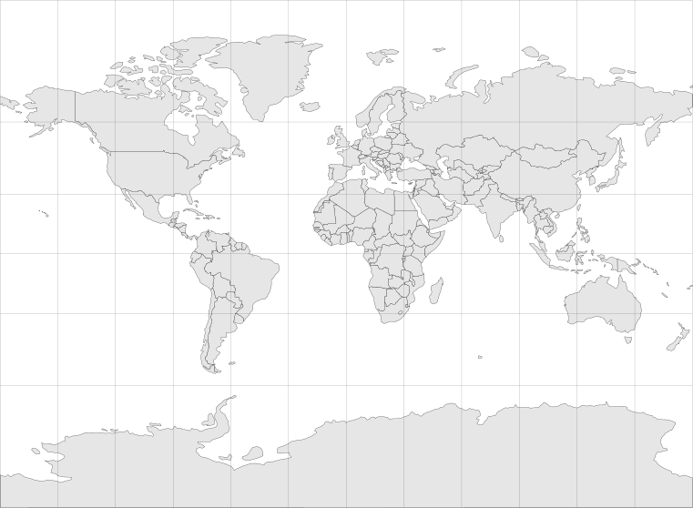

⚔ Türk Tarihi Atlası
MÖ 220'DEN CUMHURİYET'E • KPSS TARİH İNTERAKTİF KRONOLOJİ

Türk Devleti
Türk-İslam Devleti
Diğer Devletler
Savaş / Çatışma
Devletlere ve savaşlara tıklayın
✕ Kapat
◀ Geri
▶ Oynat
İleri ▶
Hız:
4s